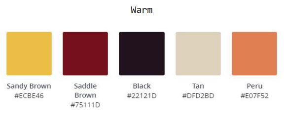
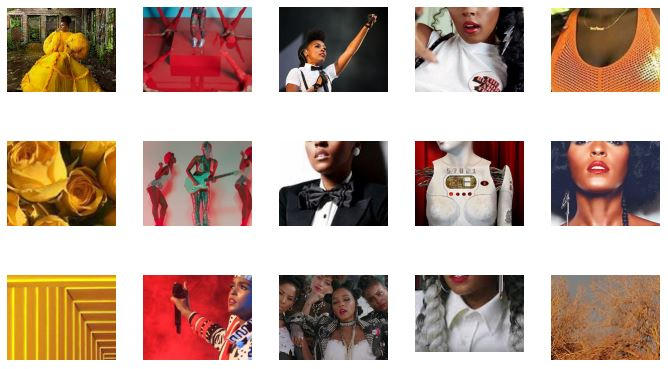

My goal for this project was to design a set of emojis that represent the feelings that are associated with the community of Janelle Monae’s video series, Dirty Computer. Each emoji is a collage of 20 unique images from different scenes in the series.
I wanted to use warm and cool colors, so I created palettes from both images and incorporated all the colors in the collages.
 